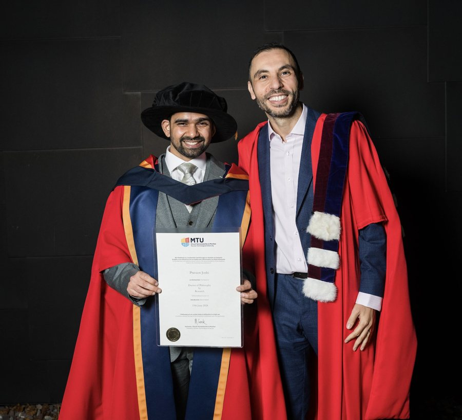

Esta página es una traducción del original en inglés, elaborada con ayuda de la IA y revisada con herramientas automáticas de gramática, ortografía y terminología. Todavía no la ha revisado un hablante nativo; la versión en inglés es la de referencia. Leer esta página en inglés
Dirección y mentoría
Dirección y mentoría de investigación de doctorado, posdoctoral y de máster. Los registros se basan en la documentación académica disponible y pueden no ser exhaustivos. Cuando la función concreta no está documentada, las entradas se describen de forma neutra como investigación dirigida o asesorada por el Dr. Haithem Afli.

Dirección de tesis doctorales (finalizadas)
- Dr Praveen Joshi — MTU · 2020–2023 · Director principal · Aprendizaje profundo distribuido y que preserva la privacidad (aprendizaje dividido/federado)
- Dr Séamus Lankford — DCU · 2020–2023 · Codirector · Traducción automática neuronal para lenguas con pocos recursos (irlandés)
- Dr Pintu Lohar — DCU · 2016–2020 · Codirector · Traducción automática sensible al sentimiento, contenido generado por usuarios
Mentoría posdoctoral (finalizada)
- Dr Urja Pawar — MTU · hasta 2024 · Informática
- Dr Jamie FitzGerald — MTU · hasta 2024 · Biología computacional
- Dr Zsolt Kardkovács — MTU · 2021–2023 · Informática
- Dr Bruno Andrade — MTU / EMBRAPA (Brasil) · 2019–2022 · Biología computacional
- Dr James Keane — MTU / UCC · 2019–2021 · Biología computacional
Investigadores contratados (finalizado)
- Fouad Shammary — MTU · 2021–2022 · Informática / PLN del árabe
- Marc Roody — MTU · 2018–2020 · Informática
Becarios de investigación e investigadores visitantes
- Sara Vecino — Universidad de Oviedo (España) · MTU · 2024 · Mejora de descripciones de productos con LLM para el comercio electrónico
- Daniele Dolzan — OKKAM (Italia) · MTU · 2020 · Plataforma de salud conectada STOP Obesity
- Matteo Perissinotto — OKKAM (Italia) · MTU · 2019 · Estudio de viabilidad de salud conectada
- Daniel Cosgrove — Trinity College Dublin · DCU · 2017 · Generación de descripciones de imágenes
- Desline Simon — DCU · DCU · 2017 · Traducción y anotación automáticas del sarcasmo (TransCasm)
- Sorcha McGuire — Trinity College Dublin · DCU · 2016 · Traducción del sentimiento para lenguas con menos recursos
- Henny Sluyter-Gäthje — Universidad de Hamburgo (Alemania) · DCU · 2016 · FooTweets, corpus bilingüe de tuits sobre el Mundial
Dirección de trabajos de investigación de máster
Registros basados en el CV académico de abril de 2026; la formulación de las funciones es neutra (dirigido o asesorado) salvo que una fuente documente la función concreta. La lista puede no ser exhaustiva.
2024 — Munster Technological University
- Syed Fazil Syed John — Quantisation of Large Language Models and Performance Assessment
- Rhythm Kulkarni — Traffic Sign Recognition using Machine Learning and Computer Vision
- Orlando Rocha dos Santos Junior — Large Language Models Applied in Human Resources Departments
- Cindy Zuniga — Advanced Sentiment Analysis with BERT and Machine Learning for Predictive Modelling of Amazon Product Success
- Chinmay Ashutosh Mishra — Prediction of Stock Price Movement Using Sentiment Analysis
2023 — Munster Technological University
- Harshita Ramdas Mondkar — Aspect-Based Sentiment Analysis on Amazon Product Reviews
- Anoop Nair — Leveraging Microbiome and Virome Data Analysis using AI
- Aishwarya Yadav — Disaster Tweets Classification using Machine Learning, Deep Learning, and Natural Language Processing
- Manel Selmi — Artificial Hallucination in Natural Language Generation: ChatGPT
- Kristina Korshunova — Evaluating the Credibility, Objectivity, Political Influence, Accuracy, and Authoritative Attribution of News Articles and Their Sources
- Manuel Frank — Paraphrase Identification in German with GeSBERT: A German Sentence Transformer resultado vinculado
- Pooja Babu — Facial Expression Recognition using AI
- Michael Mailo — HSE Project with Limerick Digital Cancer Research Centre resultado vinculado
2022 — Munster Technological University
- Thuy Truong — Written Argument Identification in Student Essays using NLP and Machine Learning Techniques
- Vijay Raj — AI-Based Mono- and Multimodal Systems for Medical Language–Video Understanding for Question-Answering Applications
- Anjali Dabholkar — Smart Law: Judgement Outcome Prediction
- Madhusudan Chandak — Annotation and Classification of Doctor Notes using NLP Techniques
- Maeve M. Barrett — Assessment of Fraudulent Claim Submission Behaviour in the Health Insurance Industry
- Neha Mahendra Gupta — Information Extraction from Financial Documents in a Multilingual Context
2021 — Munster Technological University
- Adam Żebrowski — Predicting Country Instability Based on GDELT
- Bing Yuan — Deep Learning and Emotion Detection for Improving Text-Based Medical Conversational Agents
- Dinesh Kumar Sridharan — Multilingual Information Extraction from Financial Documents using NLP
- Nethravathi Rangaswamy — Automatic Information Extraction from Legal Documents using NLP
2020 — Munster Technological University
- Sankarshan Kohli — iPOP: An Interactive Personal Assistant for Obese People
- Donal Madden — Correction of Errata in the Transcription of the 1911 Census of Ireland
- Rishabh Ajitkumar Chandaliya — TeleStroke System for Stroke Detection resultado vinculado
- Shrenik Atul Doshi — Commonsense Validation and Reasoning using NLP resultado vinculado
- Claudia Juarez Moreno (proyecto de investigación) — Stock Market Price Prediction using NLP Analysis of Web Publications resultado vinculado
- Onyinyechi Chudi-Iwueze (proyecto de investigación) — Profiling Fake News Spreaders on Twitter
2019 — Munster Technological University
- Praveen Joshi — Ensemble Event-Driven Stock Market Prediction resultado vinculado
- Shane Daly — Multilingual Detection of Hate in Social Media
- Vishal Kesti — RCNN: Recurrent Convolutional Neural Network Fake News Detection
- Sriram Bharadwaj Sampathkumar — Bots and Gender Profiling
- Sonu Prasad — Sentiment Threshold Apprehension using CNN Autoencoders for Early Detection of Cyber Attacks in Social Media
- Arvind Subramaniam Ramesh — Sentiment and Emotion Analysis on Chatbots and Bilingual Response Generation
2017–2018 — Dublin City University
- Rajath Kodandaramu — Sentiment Analysis to Identify Potential Customers
- Nithu Singh — Impact of News on Stock Prediction
- Javedali Shaikh — Matching Image and Text
2016–2017 — Dublin City University
- Jason Burns — Multimodal Sentiment Analysis resultado vinculado
- Asma Alenazi — Twitter Sentiment Analysis using Deep Convolutional Neural Networks
2015–2016 — Dublin City University
- Saurabh Gupta — Building Adequate User Interaction through Sentiment Analysis over Twitter Data